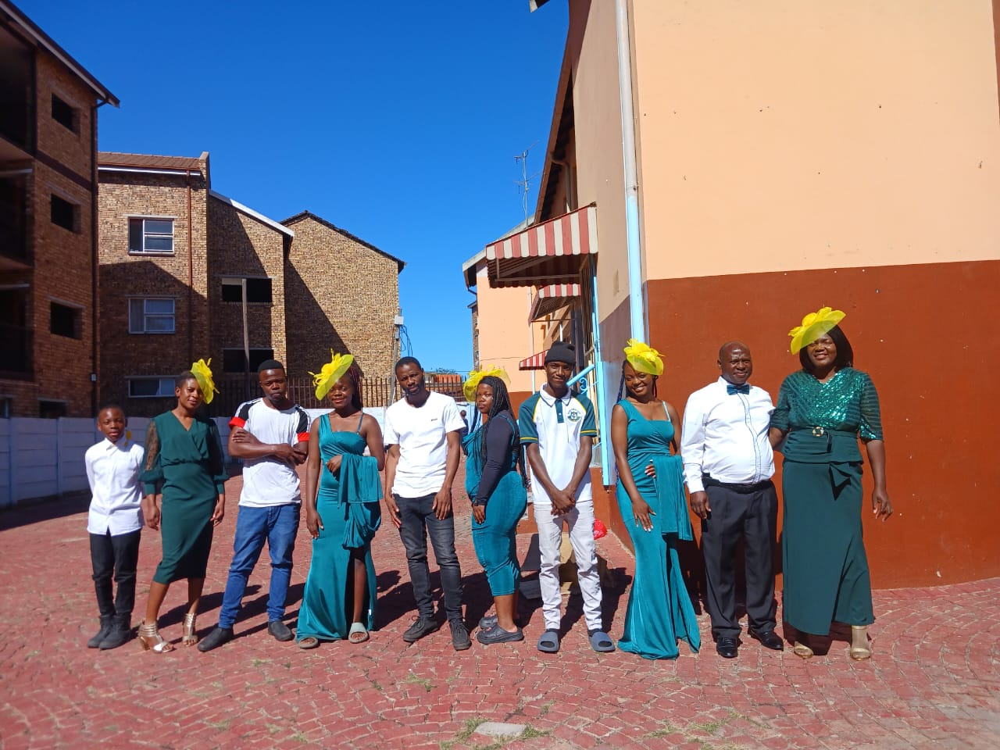

Welcome to More Blessings Restoration Ministries
 Whatsapp
Whatsapp  Cell +27 61 645 7335
Cell +27 61 645 7335

Deliverance from limitation to restoration
Whatsapp Cell +27 61 645 7335"At More Blessings Restoration Ministries with Apostle & Pastor Zwidzai, we are dedicated to fostering spiritual growth, deliverance, and restoration
within our community. Rooted in the teachings of Christ, we strive to provide a nurturing environment where individuals can
experience healing, find hope, and discover their purpose. Through prayer, teaching, and outreach, we aim to empower lives, restore
brokenness, and spread the message of God's love and grace."
.
"Our vision at More Blessings Restoration Ministries is to be a beacon of light in Kempton Park and beyond, known for our
unwavering commitment to deliverance and restoration. We envision a community where individuals find solace from life's struggles,
where families are reunited, and where the broken-hearted discover healing and renewal. By embracing diversity, fostering unity, and embodying
the principles of compassion and service, we aspire to create a world where every soul experiences the fullness of God's blessings and the joy
of spiritual liberation."

Our Family
Our Praise Team
More Blessings Restoration Ministries with Apostle & Pastor Zwidzai, nestled in the heart of Kempton Park in the vibrant Gauteng region, is a welcoming
sanctuary for all who seek the transformative power of Christ Jesus. Our doors are open wide to individuals from every
walk of life, regardless of background or circumstance, who yearn for a deeper connection with their Savior and a pathway
to renewal.
At More Blessings, we believe in the unparalleled efficacy of faith in Christ for personal transformation, deliverance from life's
trials,
the restoration of hope, and the healing of brokenness. Our ministry is not just a place of worship; it's a haven where the weary find rest, the
lost find direction, and the broken find wholeness.
We are a diverse and inclusive community, united by our shared faith in Jesus Christ as the ultimate source of salvation and restoration.
Through uplifting worship, transformative teachings rooted in biblical truth, fervent prayer, and compassionate outreach, we
endeavor to equip and empower individuals to live victorious lives in Christ.
Whether you're seeking spiritual guidance, struggling with life's challenges, or simply looking for a place to belong, you are welcome here
at More Blessings Restoration Ministries. Join us on this journey of faith as we discover together the boundless blessings and abundant
life found in Christ Jesus.
Apostle & Pastor Zwidzai